Week 2 — Data types & central tendency
Business Forecasting · LIVE pilot (slides + exercises in one deck)
Where we are
C1 Framing → C2 Describing data → C3 Uncertainty → C4–C5 Regression → C6 Forecasting
We are in C2 — describing data. This week has two halves: first what kind of data we have (types & structure), then the summary numbers that describe its center — mean, median, mode, and percentiles.
This deck is the pilot of the integrated format: the exercises you used to open in a separate learnr window now appear as slides, and the code runs right here in the browser.
Part 1 — What structure is the data?
Unit of observation
Every dataset has a unit of observation — what does one row represent? Get this wrong and every number after it is wrong.
Ask: a worker? a firm? a worker-month? a transaction?
The structure of the data follows from how the unit is observed over time. Three cases — let’s see each in a real table.
Cross-sectional data
Many units, one point in time. “Who is where, right now?”
| Customer ID | Satisfaction (1-10) | Repurchase? |
|---|---|---|
| 1 | 7 | Likely |
| 2 | 8 | Unlikely |
| 3 | 5 | Likely |
| 4 | 9 | Likely |
Example: a one-time customer survey. Business use: “What drives satisfaction now?”
Time-series (longitudinal) data
One unit, many time points. “Is it trending?”
| Year | Revenue (MXN) | Employees |
|---|---|---|
| 2018 | 50000 | 50 |
| 2019 | 52000 | 55 |
| 2020 | 55000 | 60 |
| 2021 | 58000 | 65 |
| 2022 | 60000 | 70 |
Example: one company’s revenue across years. Business use: “Forecast next year’s revenue.”
Panel data
Many units, followed over time — cross-section × time-series.
| Year | Company | Revenue (MXN) |
|---|---|---|
| 2020 | A | 50000 |
| 2020 | B | 60000 |
| 2020 | C | 70000 |
| 2021 | A | 52000 |
| 2021 | B | 63000 |
| 2021 | C | 72000 |
| 2022 | A | 55000 |
| 2022 | B | 65000 |
| 2022 | C | 75000 |
Example: several companies, each across years. Business use: “How did each firm grow?”
Your turn — name the structure
| Month | Coin | Market cap |
|---|---|---|
| Jan | Bitcoin | 60000 |
| Jan | Ethereum | 40000 |
| Jan | Dogecoin | 10000 |
| Feb | Bitcoin | 62000 |
| Feb | Ethereum | 41000 |
| Feb | Dogecoin | 10500 |
Three coins, tracked across months — which structure?
Panel — multiple subjects (coins) × multiple time points.
Part 2 — What kind of variables?
Meet our running dataset: the workforce
We’ll use one business dataset all week — a sample of the Mexican labor market, 3,000 workers in 2022. You’re a compensation analyst: is pay fair, and how does it vary?
| Monthly income (MXN) | Age | Hours/week | Gender | Region | Age group |
|---|---|---|---|---|---|
| 10000 | 26 | 20 | Men | Rest of Mexico | 18-29 |
| 30100 | 58 | 70 | Men | Rest of Mexico | 50-65 |
| 6000 | 30 | 49 | Men | Rest of Mexico | 30-39 |
| 3870 | 43 | 9 | Women | Rest of Mexico | 40-49 |
| 7740 | 48 | 50 | Women | Rest of Mexico | 40-49 |
| 5160 | 35 | 51 | Men | Rest of Mexico | 30-39 |
First job: know what kind of variable each column is.
Categorical variables
Labels / groups. Summarize with counts and shares.
Nominal — no natural order
gender: Women, Menregion: Mexico City, Rest of Mexico- Social platform: Facebook, TikTok, …
Ordinal — ordered, but distances aren’t meaningful
- Education: primary < high school < university
- Satisfaction: Very unsatisfied < … < Very satisfied
We can rank ordinal categories, but “Satisfied − Neutral” is not a real quantity.
Numerical variables
Quantities you can do arithmetic on. Summarize with averages and spread.
Discrete — only certain values
age(whole years)- Number of vehicles a household owns
- App downloads
Continuous — any value in a range
monthly_income(MXN)hours_worked- Exchange rate MXN/USD
Ordinal vs discrete: both use numbers, but ordinal labels have no arithmetic meaning — discrete counts do.
Discrete = a countable set of values
A discrete variable can only land on specific values — nothing in between.
- Number of children in a household
- App downloads from the store
- Coke product sizes: 0.33L, 0.5L, 1L, 2.25L
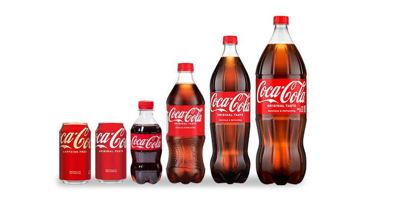
Classify our workforce variables
| Variable | Type | Subtype |
|---|---|---|
| monthly_income | Numerical | Continuous |
| age | Numerical | Discrete |
| hours_worked | Numerical | Discrete |
| gender | Categorical | Nominal |
| region | Categorical | Nominal |
The type decides the summary and the chart — get it wrong and your client gets a misleading number.
🖊️ Exercise 1 — Explore the data
Show the first 10 rows, then the structure of workforce. Type in the box and press Run — R runs in your browser.
head(<data>, <n>) shows the first n rows; str(<data>) shows the structure.
🖊️ Exercise 2 — Classify a variable
Is gender categorical or numerical?
Categorical (nominal — no order).
Is monthly_income categorical or numerical?
Numerical (continuous).
Part 3 — Visualizing categorical data
Frequency table: the starting point
How is our workforce split across age groups?
| Age group | Workers | Share |
|---|---|---|
| 18-29 | 654 | 21.8% |
| 30-39 | 883 | 29.4% |
| 40-49 | 815 | 27.2% |
| 50-65 | 648 | 21.6% |
Exact — but a manager grasps a picture faster. Relative frequency of category \(i\) is \(p_i = n_i / N\).
🖊️ Exercise 3 — Frequency table
Make a frequency table of region (counts), then convert it to shares.
table() gives counts; prop.table() turns counts into shares.
Same table, a nominal variable
Frequency tables work for any categorical variable — ordinal or nominal. Here the same recipe applied to region (nominal, no order):
| Region | Workers | Share |
|---|---|---|
| Mexico City | 59 | 2.0% |
| Rest of Mexico | 2941 | 98.0% |
Categories are mutually exclusive and collectively exhaustive, so the shares always sum to 1.
Bar chart
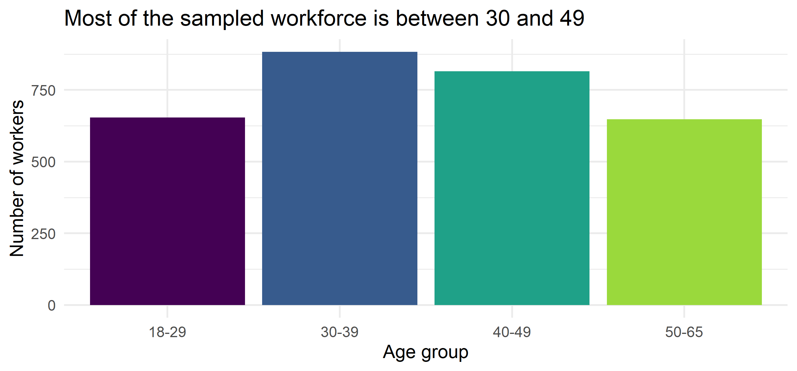
Bars are the right tool for categories: length = count, easy to compare.
🖊️ Exercise 4 — Bar chart
Draw a bar chart of the number of workers in each age_group.
barplot() wants a table of counts: barplot(table(...)).
Relative frequencies: compare groups fairly
Comparing women vs men by raw counts misleads (more men in the sample). Show shares within each gender:
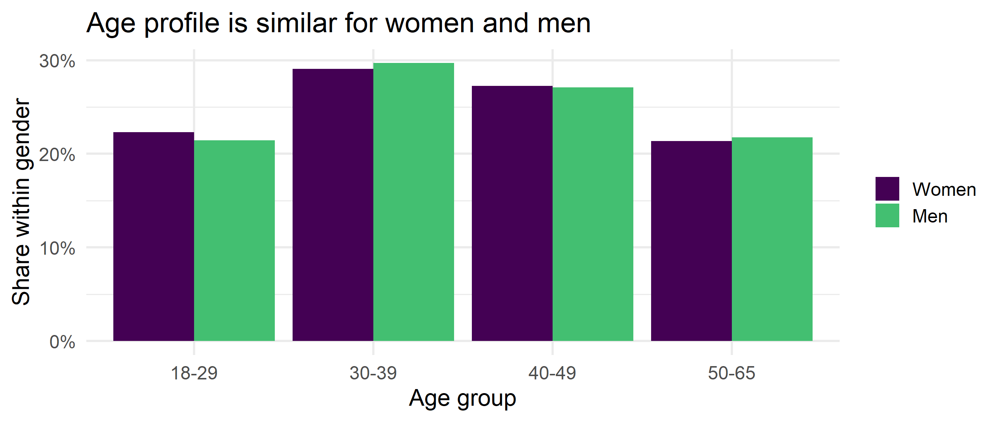
🖊️ Exercise 5 — Relative frequencies
Draw the same bar chart as shares instead of counts.
Wrap the counts in prop.table() before barplot().
Pie charts: usually the wrong choice
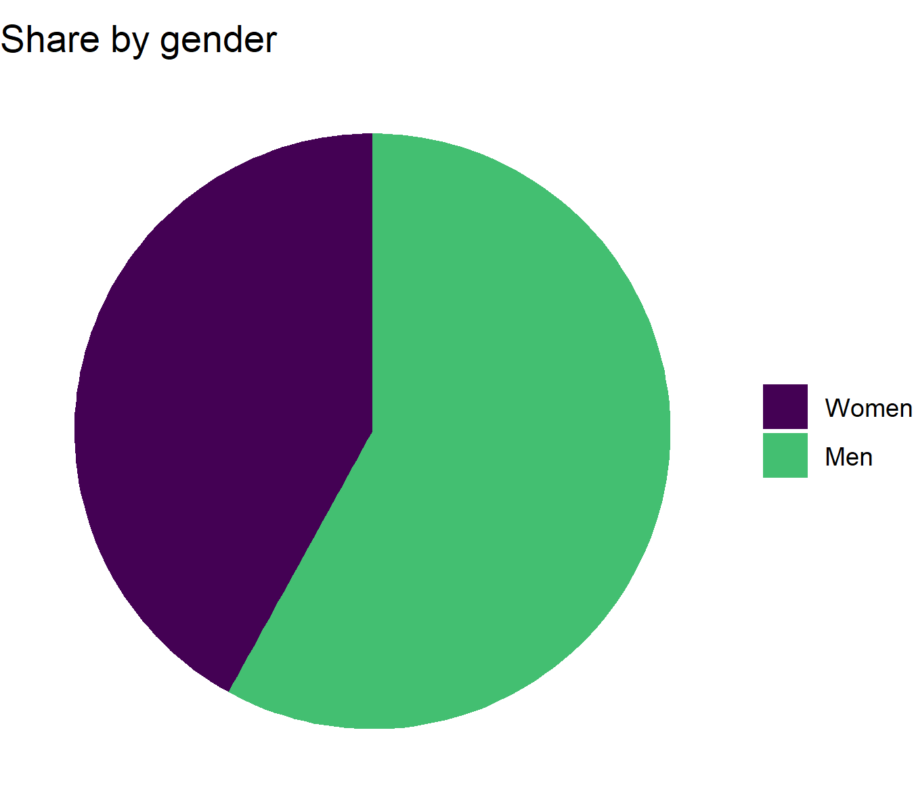
People compare lengths well and angles badly.
- OK for 2–3 slices summing to 100%.
- For more, a bar chart wins.
Reaching for a pie with 5+ slices? Use bars.
🖊️ Exercise 6 — Pie chart
Make a pie chart of gender. (Notice how hard slices are to compare — a bar chart is usually clearer.)
Part 4 — Summary statistics: central tendency
Now boil the distribution down to a few numbers managers ask for.
Mean
- Mean is the arithmetic average — intuitively, the balancing point of the distribution.
- Population mean (\(N\) = population size):
\[\mu = E(X) = \frac{\sum_{i=1}^{N} x_i}{N}\]
- Sample mean (\(n\) = sample size) is the sample equivalent:
\[\bar{x} = \frac{\sum_{i=1}^{n} x_i}{n} = \frac{x_1+x_2+...+x_{n-1}+x_n}{n}\]
🖊️ Exercise 7 — The mean
(a) Compute the mean monthly_income with mean(), then verify it by computing sum(...) / length(...) yourself — same number.
(b) Compute the mean of the binary gender == "Women" — what does that number represent?
Median
- Median represents the middle value when data is sorted
- Half of observations are below it, half are above it.
- For odd size \(n\): the \(\frac{n+1}{2}\)-th value. For even \(n\): average of the \(\frac{n}{2}\)-th and \(\frac{n}{2}+1\)-th values.
| Day | Customers |
|---|---|
| 1 | 20 |
| 2 | 18 |
| 3 | 25 |
| 4 | 22 |
| 5 | 30 |
| 6 | 21 |
| 7 | 27 |
\(n=7\) (odd), so:
- Sort: 18, 20, 21, 22, 25, 27, 30.
- Median = the \(\frac{7+1}{2} = 4\)-th value.
- Median = 22.
🖊️ Exercise 8 — Mean vs median
Compute both the mean and the median of monthly_income. Income is right-skewed — which is larger, and why?
Mean vs Median
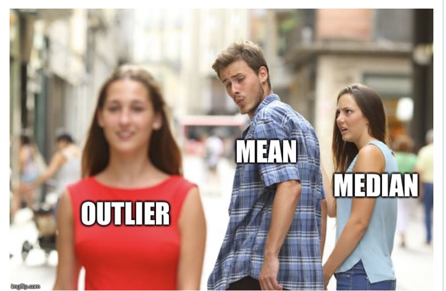
Mean vs median: what an outlier does
Weight in our health data — mean (dotted) and median (dashed):
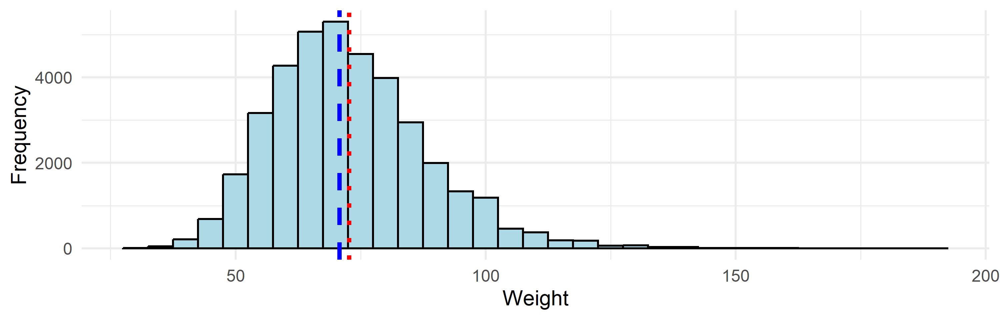
- Mean: 72.66, Median: 70.75
Now add outliers on the right tail
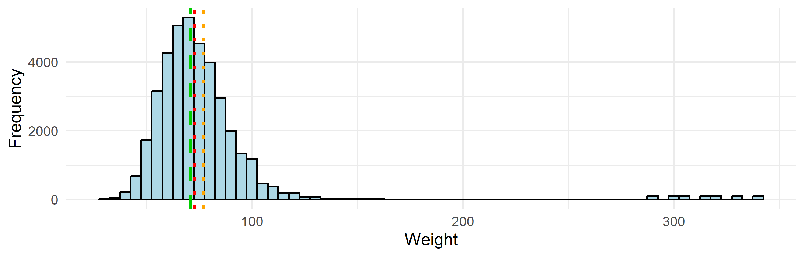
- Old Mean: 72.66, New Mean: 77.05 — dragged up by the outliers
- Old Median: 70.75, New Median: 70.95 — barely moves
Side note on the Mode
Mode is the most frequent value in the data.
Distribution of age of people with diabetes (first rows of the frequency table):
| Age | n_i | p_i |
|---|---|---|
| 60 | 133 | 0.032 |
| 65 | 129 | 0.031 |
| 56 | 124 | 0.030 |
| 58 | 122 | 0.029 |
| 59 | 119 | 0.029 |
| 68 | 116 | 0.028 |
🖊️ Exercise 9 — The mode
Find the most common age_group (the mode of a categorical variable).
which.max() returns the position of the largest value in a table.
Percentiles
Percentiles
Percentiles
Percentiles
Percentiles

Credits: Wall Street Journal — Article Link
Percentiles
- How much inventory of milk you need to keep in your Starbucks?
- What is the tradeoff of keeping too much vs too little inventory?
- Suppose we want to have enough milk to cover sales on 95% of days
- To figure it out, let’s look at the distribution of the daily use of milk
Percentiles (cont.)
Distribution of the daily use of milk:
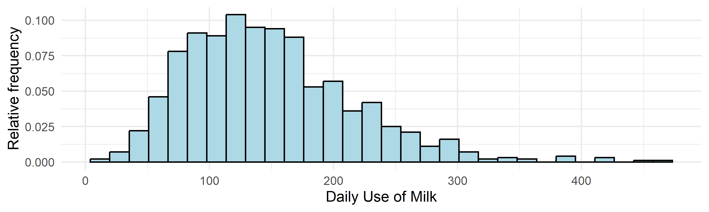
Percentiles (cont.)
- Let \(s_i\) be the daily sales of milk
- We want to choose amount \(M\), such that \(P(s_i \leq M)=0.95\)
- That is, in 95% of days sales are smaller or equal than \(M\)
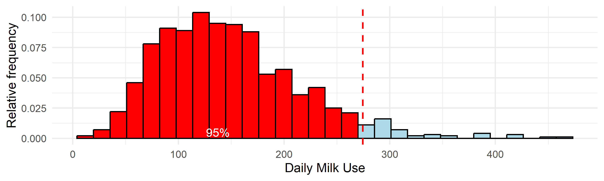
The answer is the 95th percentile of the distribution (274 liters).
Percentiles — definition
- Percentiles divide the ordered data into 100 equal parts.
- \(p\)th percentile is a value such that \(p\%\) of the data are below it
- \(v_p\) is such that \(P(x_i \leq v_p)=p\)
- \(v_{95}\) is such that \(P(x_i \leq v_{95})=95\%\)
- What is the height such that 75% of ITAM students are smaller than this height?
- What is the income level such that 25% of people in Mexico earn less than that level?
- When do I need to leave home to be on time for class 90% of the days?
How to find it in a sample
- Arrange the data in ascending order
- Find which observation corresponds to the relevant percentile
- Formula: \(i = \left(\frac{p}{100}\right)(n+1)\)
- Example: 95th percentile in a sample of 1000 observations → \(i = \left(\frac{95}{100}\right)(1000+1)=950.95\)
- If it’s an integer, the value of the \(i\)-th observation is your percentile
- If it’s not, take the average between \(i\) rounded down and \(i\) rounded up
- Here: the average of the 950th and 951st observation
🖊️ Exercise 10a — Percentile by hand
Daily milk use (liters) in a café over 9 days. Find the 25th percentile with the formula: sort x, compute the index i = (25/100) * (length(x) + 1), then average the two sorted values around it.
sort(x) sorts; i comes out 2.5, so average x_sorted[2] and x_sorted[3].
🖊️ Exercise 10b — Percentiles on real data
Compute the 10th, 25th, 50th, 75th, and 90th percentiles of monthly_income with quantile(). The 90th is the income 90% of workers earn below.
🖊️ Exercise 10c — Percentiles shape the distribution
Draw a histogram of monthly_income and add vertical lines at those five percentiles with abline(). Between any two neighboring lines lies a fixed share of workers — lines are packed where data is dense, spread out in the thin right tail.
hist(...) draws the histogram; abline(v = ..., col = "red", lwd = 2) adds the lines.
Common values
- Median — 50th percentile — half of the values are below the median
- Quartiles — 25th, 50th and 75th percentile.
- How poor is the poorest quartile of the society? Their income is below the 25th percentile.
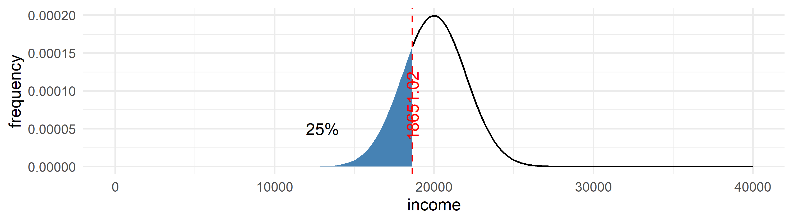
Common values (cont.)
- Deciles — 10th, 20th, … 90th
- How bad does pollution get in CDMX during the top 10% polluted days?
- During the top 10% of polluted days, pollution is larger than the 9th decile.
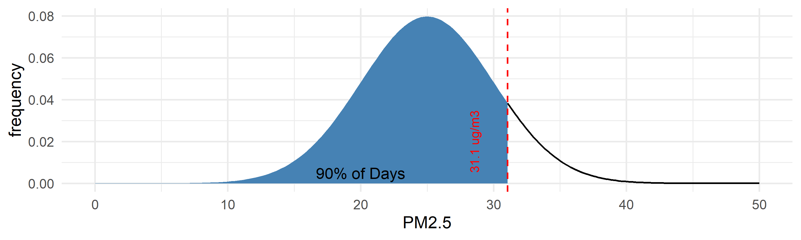
Exam spotlight — Fall 2025 Midterm 1
Real questions from last year’s Midterm 1. We solve these together in class.
Exam question — Fall 2025 Midterm 1
Households & Environment Survey, each household surveyed once in 2017.
Q1 (Dataset type). Each household appears once, in 2017. Is the data cross-sectional, time-series, or panel?
Q2 (Variable classification). Classify each: Household size · Monthly electricity bill · Separates trash (yes/no) · Locality size (village < town < city).
Exam question — Fall 2025 M1 (cont.)
Q3 (Visualization). An energy company wants to understand the distribution of weekly household gasoline spending to design a fuel-discount program.
Visualize gasoline_spending_weekly and describe its shape.
Q5 (Boxplot — the median). A boxplot compares monthly electricity bills for households that use electricity for cooling vs those that do not. Which group has the higher median electricity bill?
The median is the line inside the box — compare the two lines.
What you must be able to do this week
Data types & visualization
- Identify the unit of observation and whether data is cross-sectional, time-series, or panel.
- Classify a variable as categorical (nominal/ordinal) or numerical (discrete/continuous).
- Build and read the right chart for a categorical variable (bar over pie).
Central tendency
- Choose and compute the mean, median, and mode, and know which measure an outlier moves.
- Compute the mean of a binary variable (a proportion).
- Find and interpret percentiles, quartiles, and deciles.
Next week: from where the center is to how spread out the data is.